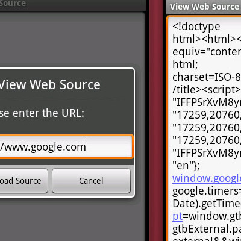

<section id="content">
        <div class="fullitem">
            <div class="promo">
                
            </div>
            <div id="details">
                <p>
                    <a class="title" href="https://play.google.com/store/apps/details?id=com.jamesob.vwsource" target="_blank">View Web Source</a>
                </p>
                <p>
                    My first android application was to create the ability to view the source of a web page. With integration into the android browser, the user could enter a URL and the source of the page would be returned. The application was listed by Mashable as one of their top 5 apps for web developers and featured in .net Magazine issue #203 as one of the top 20 mobile applications for web developers.
                </p>
                <p>
                    <a href="https://play.google.com/store/apps/details?id=com.jamesob.vwsource" target="_blank">
                        
                    </a>
                </p>
            </div>
        </div>
    </section>
